咩哞
Memo of Memories
B06 人生留檔計畫
死亡是生命中不可避免的課題。面對死亡時，我們常感到沉重、無助，甚至害怕。死亡是充滿未知和挑戰的話題，但也是無法避免的現實。那麼，面對死亡，我們能做些什麼呢？
透過紀錄memo，保存內心感受。當閱讀過去的memo時，回顧生活旅程、成長、成就和挑戰，也能找到對人生的掌控感，以更平和的心境面對死亡。
Death is an inevitable topic in life. When faced with death, we often feel heavy, helpless, and even afraid. It's a subject full of unknowns and challenges, yet it's also a reality we cannot avoid. So, what can we do when facing death?
Through recording memos, we can preserve our inner feelings. When reading past memos, we can review our life journey, growth process, achievements, and challenges encountered. From this, we can also find a sense of control over our own lives, facing death with a more peaceful mindset.
組員 Members
魏歆庭
張秭霖
鄭慧雯
陳若妤
黃詩桓
指導老師 Supervisor
陳重任
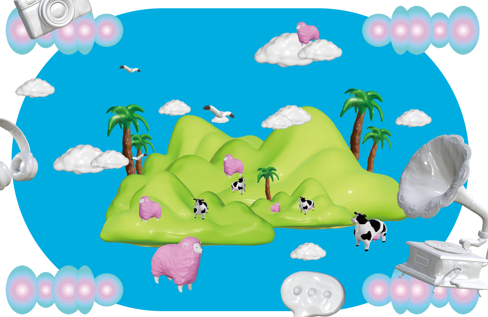 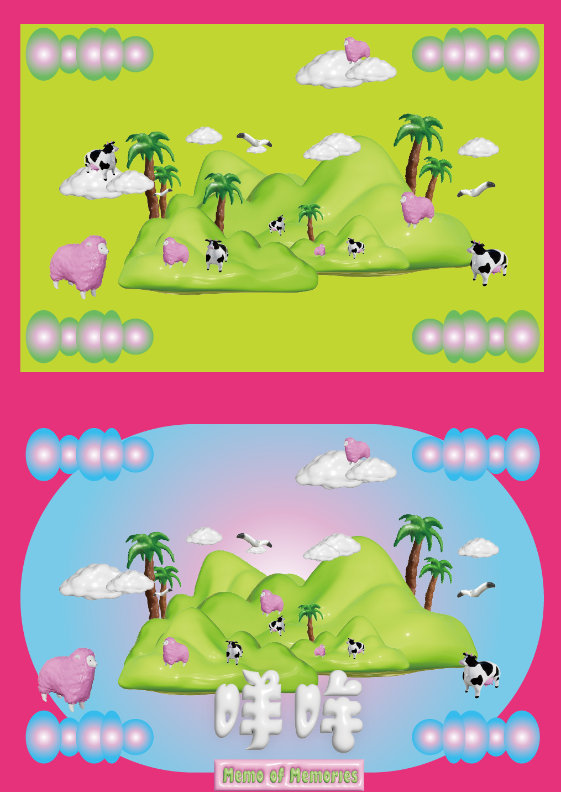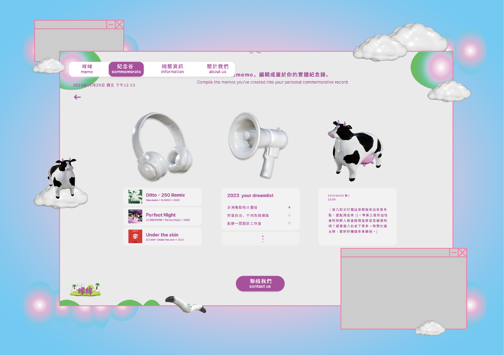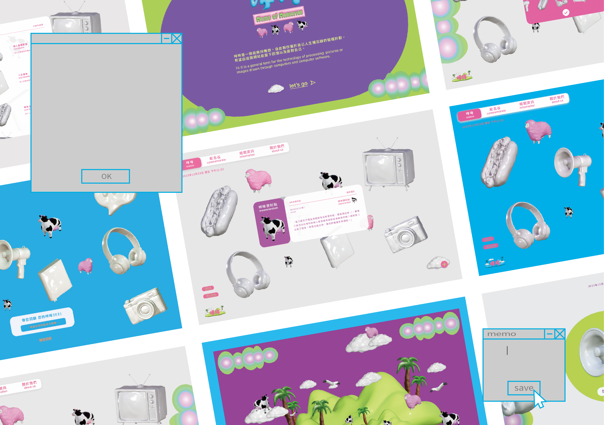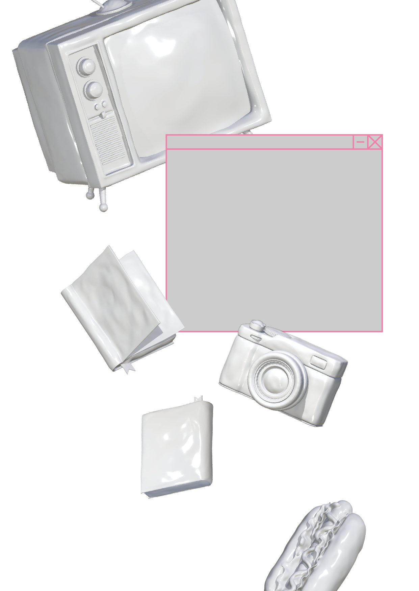
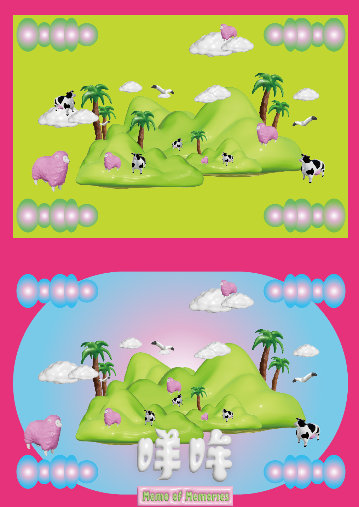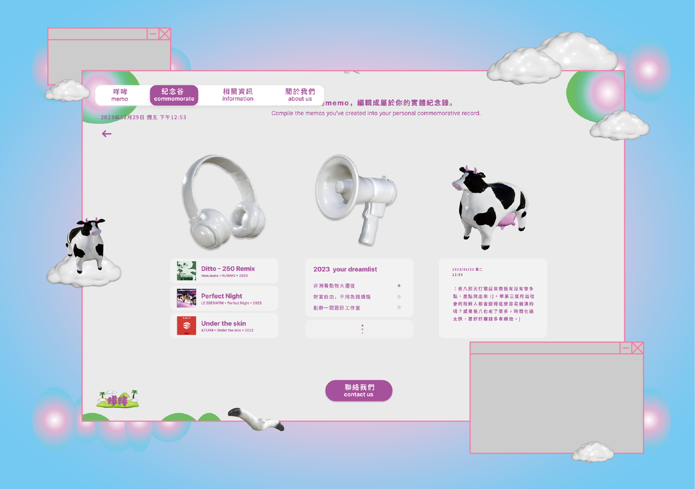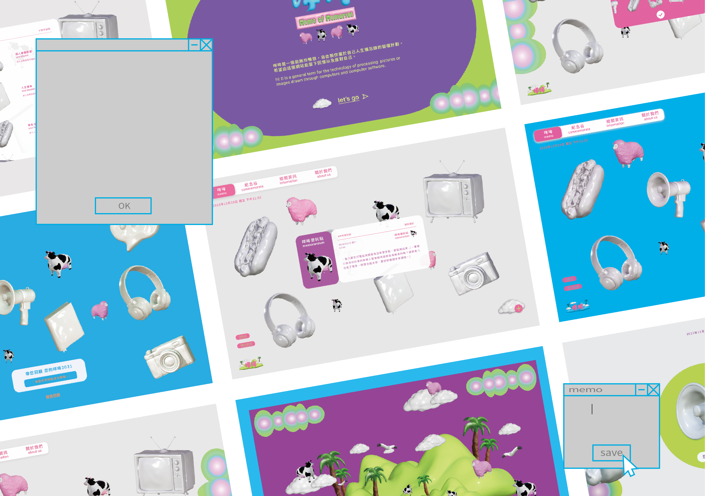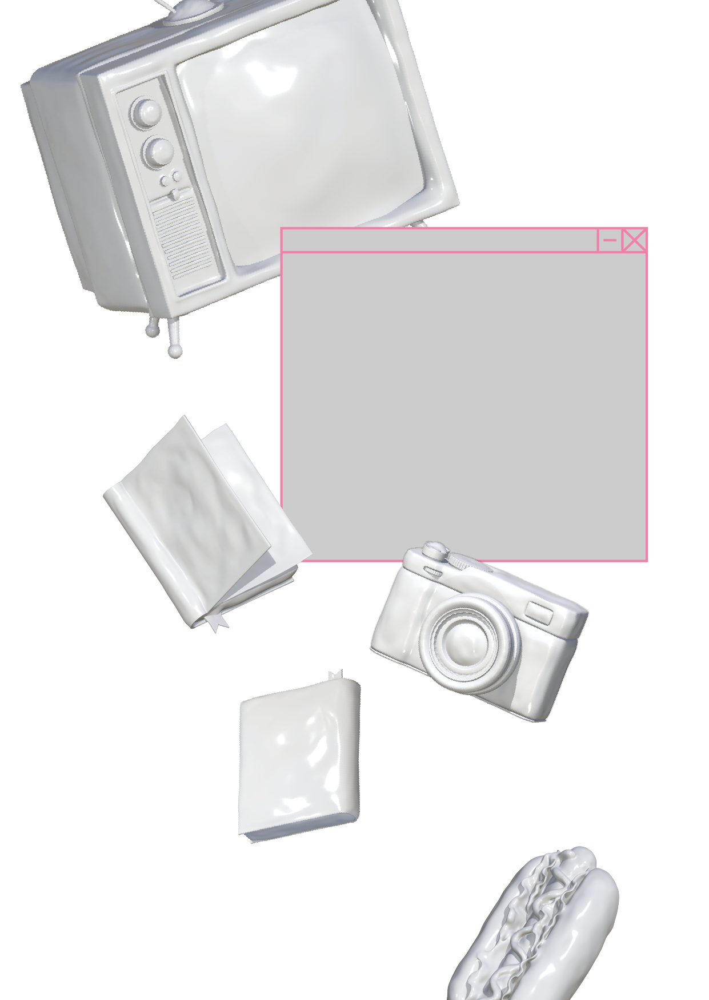
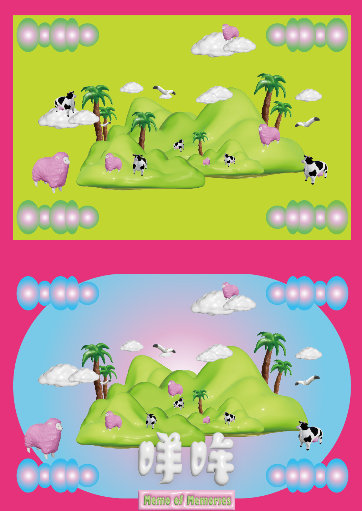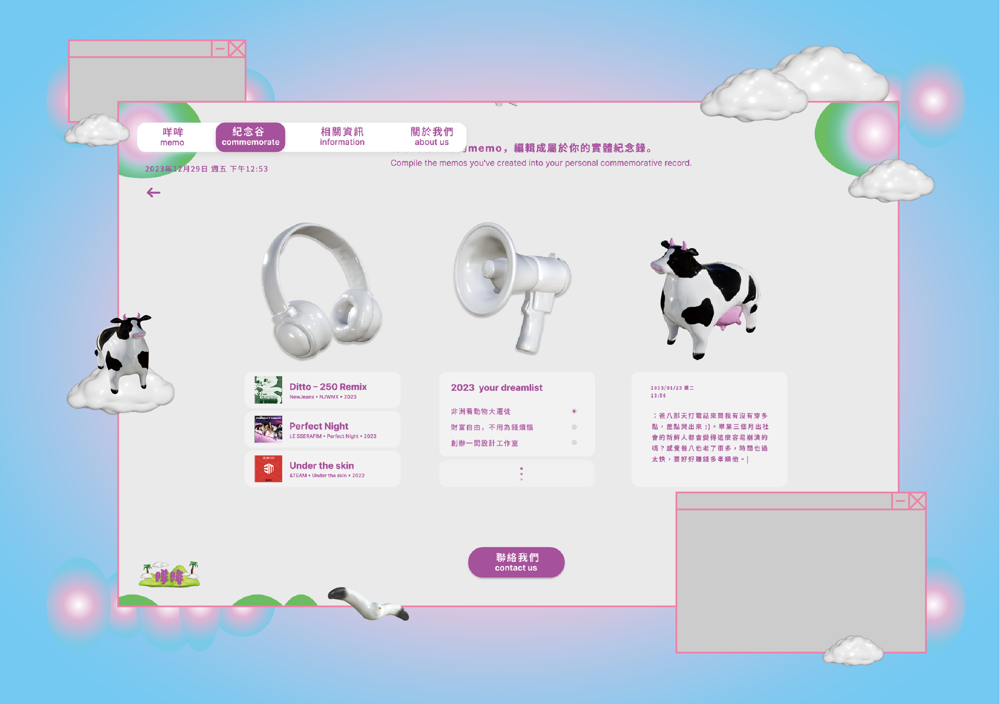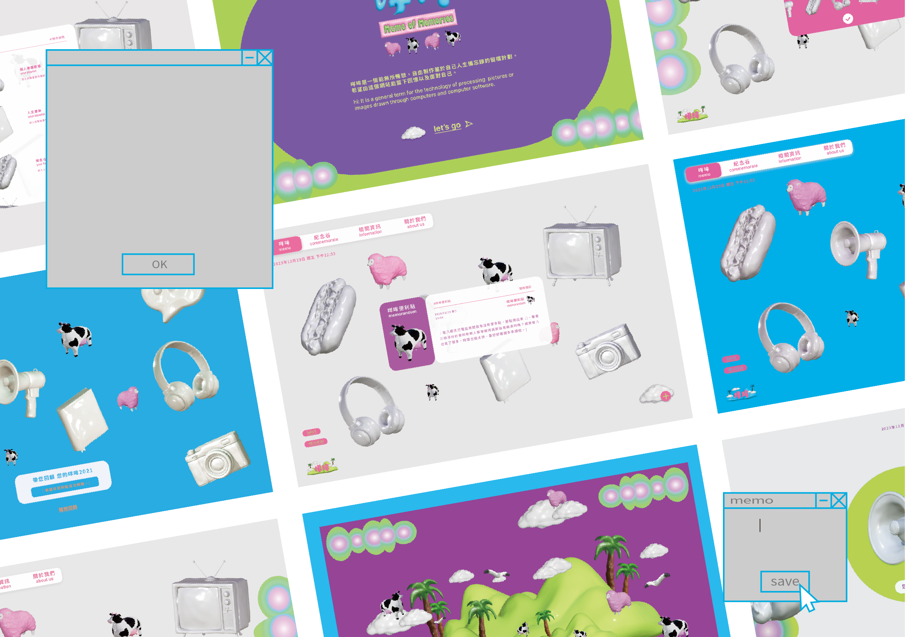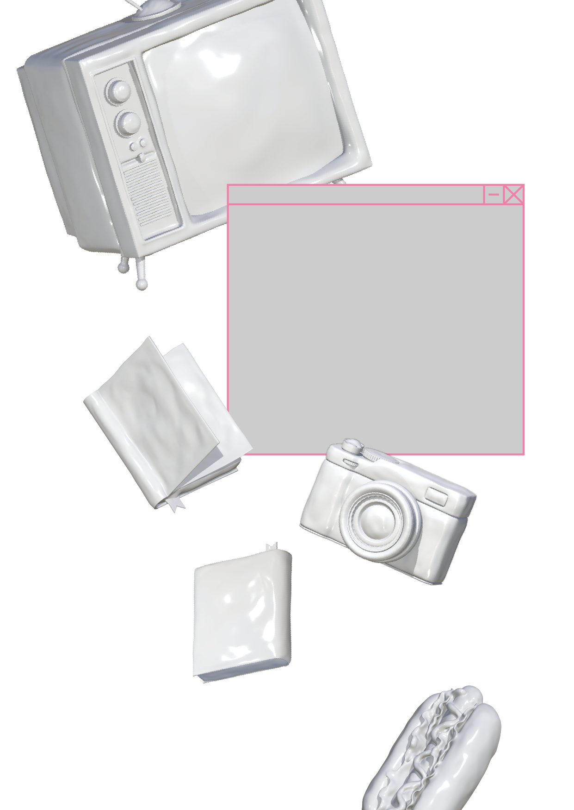